Coastal Set-Up
Contents
Coastal Set-Up#
Overview
Please use these instructions to get your computer ready for the Coastal Urban Modeling training class.
Regular Class Setup.
ASFPM Workshop Setup.
Step 1: Run the Installers#
Run through the FLO-2D Setup using the following link. Then return here and go to Step 2.
https://documentation.flo-2d.com/Intro/Set-up.html
Note
Admin rights are required to set up the computers. Please get assistance from your IT. Please reply to the class notification email or use the contact form to get help from Karen O’Brien. https://flo-2d.com/contact/
Step 2: Set up the Coastal Training Project#
Use this link to download the project data for the ASFPM Workshop.
https://flo-2d.sharefile.com/d-s3fe663fd0cb540b9b18261681b627d10
Step 3: Create a Quick Access Link#
Prepare the computer with the class data. This will help keep everyone on the same page as we run through the lessons.
Open Microsoft Explorer
Navigate to C:\Users\Public\Documents\FLO-2D PRO Documentation\Example Projects
Create a folder called Coastal Training add it to the to the Quick Access area on the sidebar.
Review the animated gif for help. Keep your eye on the timestamp to see when it restarts.
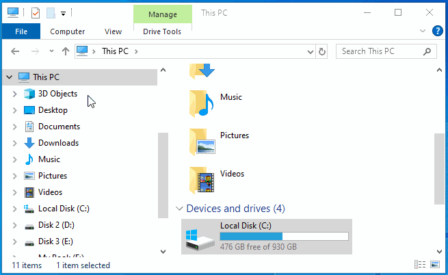
Move the Class data from the Download folder into the Coastal Training Folder.
Step 3: Open QGIS#
Open QGIS.

Click Settings/Options
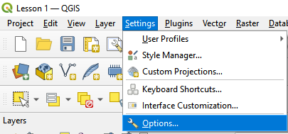
Click the CRS tab and set the options as shown below. Use CRS from first layer added. Use Project CRS. Click OK to close the window.
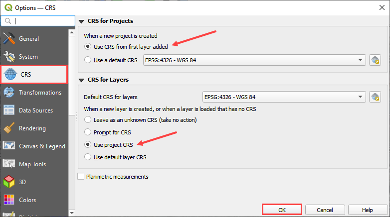
Step 4: Add Plugins#
Add the FLO-2D plugin and a few other handy plugins.
Open to the plugin manager.
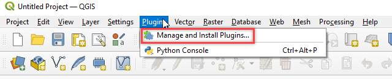
Install Quick Map Services and Profile Tool and Curve Number Generator
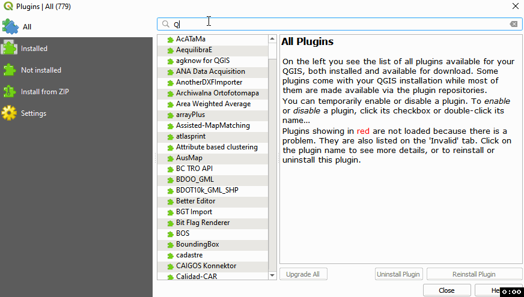
Lastly Install from Zip FLO-2D Plugin. Close the Plugin Manager once everything is finished installing.
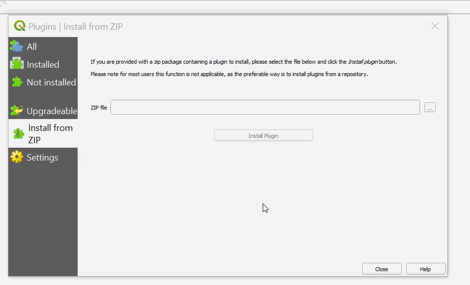
Add more services to Quick Map Services and eliminate unwanted maps. Click Quick Map Services button and click Settings. On the settings window, go to More Services and click Get Contributed pack. On the Visibility window, uncheck the unwanted maps.
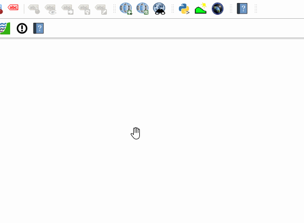
Note
ASFPM class Skip Step 5. Everyone else do Skip Step 6.
Step 5: Load the Project AOI into QGIS#
Open Coastal Training project folder. C:\Users\Public\Documents\FLO-2D PRO Documentation\Example Projects\Coastal Training\Project Data\AOI
Drag the AOI.shp file onto the map space.
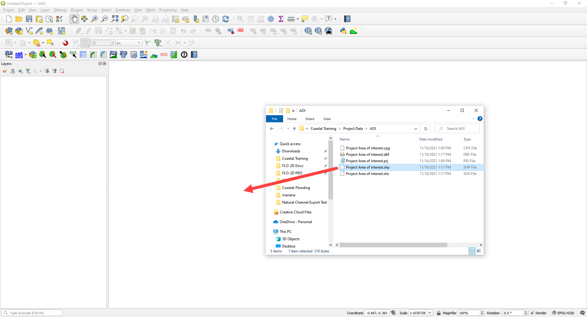
Note the coordinate system is now set to EPSG 2881.
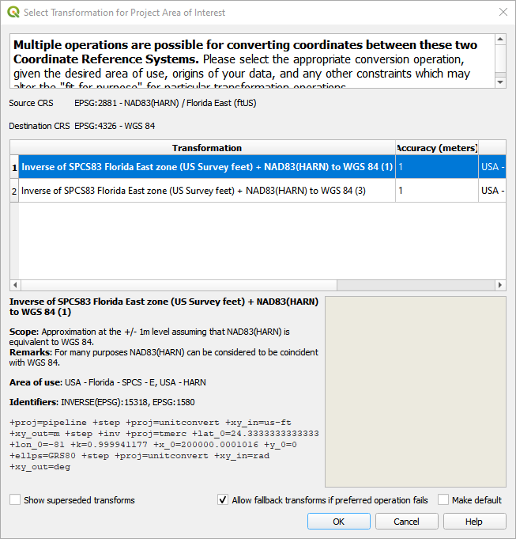
Step 6: ASFPM Workshop Method Load the Project into QGIS#
Open Coastal Training project folder. C:\Users\Public\Documents\FLO-2D PRO Documentation\Example Projects\Coastal Training\Project Data\Coastal Training.qgz
Drag the *.qgz file onto the map space.
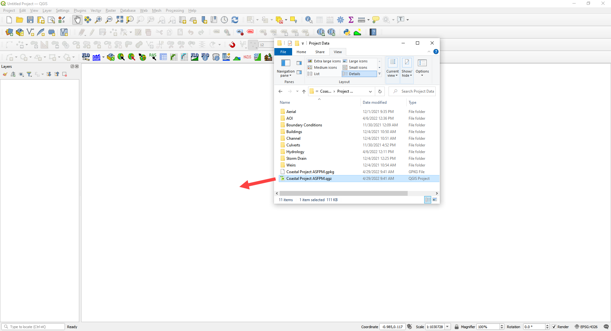
Click Yes to Load the Model.
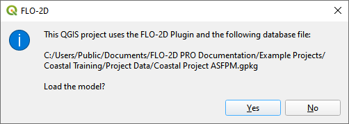
The map should look like this.
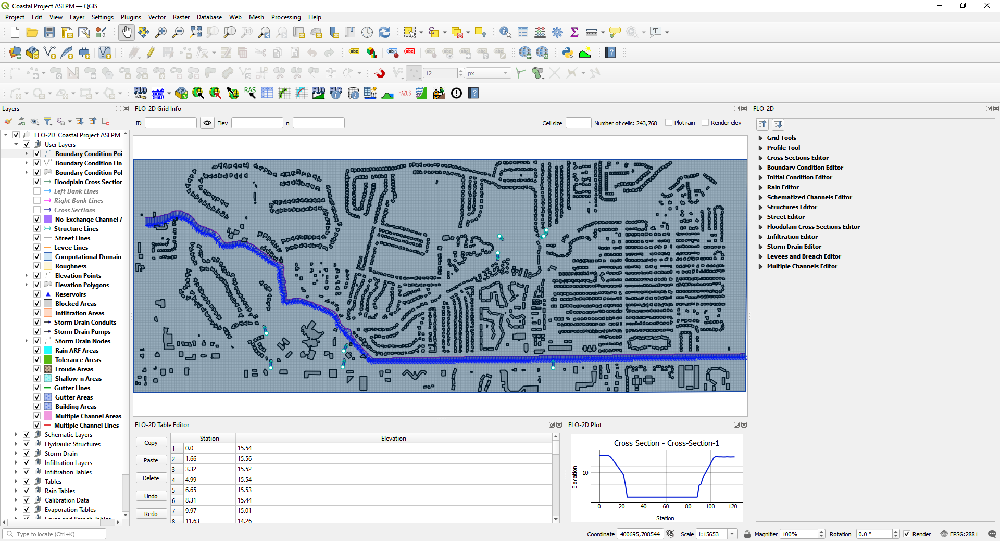
7. ASFPM Class. The next lesson is Hydrology starting at Step 3. https://documentation.flo-2d.com/Coastal-Flooding/Hydrology.html#step-3-set-up-the-rainfall